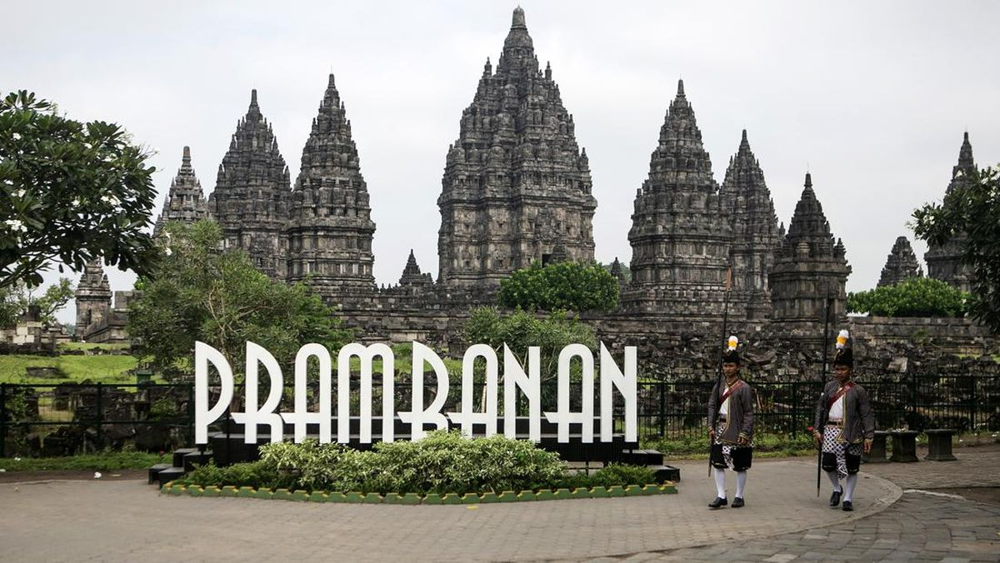
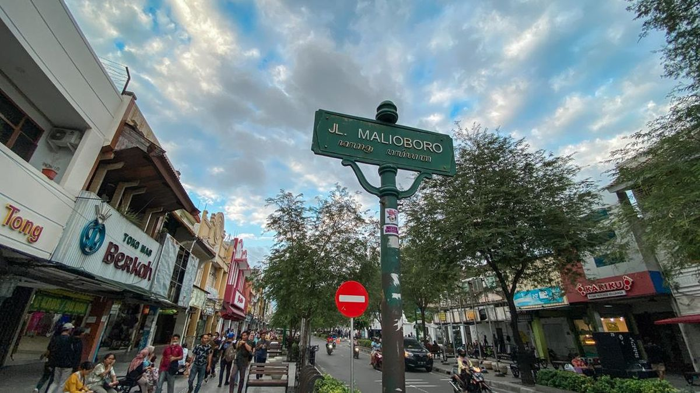

Destinasi yogyakarta

Candi Prambanan
Candi Prambanan dibangun pada abad ke-9. Menjulang setinggi 47 meter dengan ornamen yang mengagumkan, kecantikan candi Hindu ini tak tertandingi. Candi Prambanan terletak 17 km ke arah timur dari pusat Kota Jogja dan bisa dijangkau dengan bus Trans Jogja.

Malioboro
Malioboro adalah jantung Kota Jogja. Tak heran bila banyak penginapan murah dekat Malioboro, meskipun sekarang banyak hotel berbintang. Apa saja tempat wisata dan hotel dekat Malioboro? Temukan info lengkapnya di sini.

Candi Borobudur
Dibangun pada abad ke-9, Candi Borobudur sekarang menjadi magnet yang mampu menarik jutaan wisatawan setiap tahun.